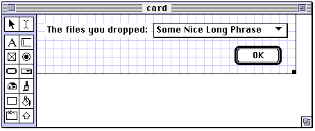

| TOP | UP: Interface | NEXT: Multiple Databases |
This chapter describes ways in which objects may be separated from the database and saved as independent files. One use for such files has to do with backing up the database, so this chapter also discusses the "care and feeding" of the database: how to back it up, maintain it, and upgrade it.
Objects can be made into an independent file, or exported, in several forms. Each form has a different use. After an overview of these forms, they are each discussed at length.
A packed object is a database entry copied to a separate file. When a packed object is opened, Frontier automatically imports it as a normal object into the database. Thus, a packed object is a good way to communicate an object to other users, or to a different database.1 Packed objects are useful also for backing up parts of the database; and, as we shall see, a typical way to maintain or upgrade the database is to export customized parts of the database as packed objects, then import them into a clean root.
A desktop script is a script which has been exported as a packed object, but also has a special property: when it is opened, instead of being imported into the database, it is executed by Frontier. It isn't really an executable, since Frontier must be running; but it feels like an executable, and is a convenient way to access Frontier functionality from outside Frontier.2
A droplet is a very minimal application, a true executable, onto which icons of files or folders can be dropped; the application contains a script which is then called by Frontier, and which has access to a list of those files and folders, so that it can process them.
To export a database entry to a packed object file, select the entry in a table edit window, and choose Export from the Main menu. The Export dialog appears. The editable text box in the dialog is for the object reference of the object to be exported; this should already be the entry you selected.
The first popup menu should be set to Packed Object. The second popup menu gives two options. One is simply to make the file. The other is to make the file and attach it to the current outgoing Eudora message.
In the first case, where you save the packed object is up to you. As the packed object is about to be created on disk, a StandardPutFile dialog appears. Feel free to alter the default filename, as it is without significance to Frontier: when the packed object is imported, the object reference of the originally exported object will be retrieved from inside the packed object.
In the second case, a temporary version of the file will be placed into the Outgoing Frontier Objects folder inside the Eudora folder in the UserLand folder in your system's Preferences folder; it is this temporary file that Eudora is instructed to attach to its frontmost message. The temporary file is not automatically deleted after the message is sent, so it is up to you to clean the Outgoing Frontier Objects folder periodically.3
Radio buttons in the Export dialog provide options to compress the packed object in StuffIt format, or to compress it and then BinHex-encode the compressed version. If you choose one of these options, the StuffIt Engine will be driven to carry out your wishes (or the StuffIt application, if you don't have the StuffIt Engine), and the uncompressed packed object file will be deleted.
You can avoid the Export dialog by holding the Shift key as you choose Export; the selected object will be exported according to the dialog settings from the last time you used the dialog.
A menubar object can be exported as an ordinary packed object, but frequently what is desired is to export a particular menu item (along with its script, and any menu items hierarchically dependent upon it). This is done by selecting the menu item in a menubar edit window, and choosing Export SubMenu from the Menubars menu.
You can export a table and its entries as individual packed objects, rather than exporting the whole table as one packed object. To do this, select the table as an entry in its parent table, and choose Export from the Main menu; when the Export dialog appears, set the first popup to Folder.
The table will be represented on disk by a folder (despite the Save dialog, which asks for a "file" name). All entries in the table are exported as individual packed objects, except for tables, which are represented as folders. Thus the end product is a hierarchy of folders and packed object files, mirroring the structure of the original table.
One advantage of this format is that the exported objects, though many, are relatively small; Frontier has an easier time importing and exporting smaller objects. On the other hand, a single packed object file is far more space-efficient than its contents broken out into individual packed object files.
A packed object may be opened from the Finder like any other file - by double-clicking it, or by selecting it and choosing Open from the File menu, and so on. It is also possible to open a packed object from within Frontier, using Open from the File menu; or the packed object's icon may be dropped onto Frontier's icon.
When a packed object is opened, Frontier comes to the front and presents a dialog offering a chance to cancel importing, or to determine the imported object's destination (its object reference) in the database. The default is the object's path from before it was exported. You can change this destination if you wish: you must supply a complete path (except for "root"), and it must be a valid object reference. If an object of the same name already exists, a second dialog asks whether you wish to overwrite it with the imported object; if you decline, the first dialog appears again.
After the object is imported, if it is a table, and if the table contains a script entry called importSuite , that script is called. This is in order that suites may initialize themselves as they are imported (see Chapter 26, Menus and Suites). But the notion that a script supplied by someone else is to be run before it can be examined seems dangerous, since Frontier scripts can do very powerful things, such as erasing the hard disk. In my database, I have commented out the line in suites.export.importer that calls importSuite, replacing it with a dialog just letting me know that the importSuite script exists, like this:
if typeOf (adr^) == tableType «see if it has an importSuite script
if defined (adr^.importSuite)
« adr^.importSuite (adr)
« previous line removed, and next one added, for safety
dialog.notify (string(adr) + " has an importSuite routine")
return (true)
Alerted by the dialog, I can later study the importSuite script, and call it manually if I approve of it.
My approach to importing other objects is equally circumspect. If an imported object offers to replace an existing object, then I generally import it to a different location, study it at leisure, and, if it passes muster, manually paste it in place of the existing object.
When importing a menu item, no dialogs appear; all destination information comes from the packed object, and there is no way of knowing what menu item in what menubar is about to be imported. If the menu item comes from a menubar that doesn't exist in the database, that menubar is created. If it comes from a menu that doesn't exist, that menu is created. If the menu item already exists, it is replaced; if it doesn't exist, it is added at the end its menu (no control over the menu item's location within its menu is provided). See Chapter 26 on the verb menu.addSubMenu().
I find this situation unacceptably insecure. The script performing the import is suites.export.importSubMenu ; in my database, I have modifed it to add dialogs and choices to let me control the import process, as with other types of object.
There are three ways to import a folder of exported packed objects. One is to call suites.export.importFolder() . There is no menu interface; you have to call it manually, or, if you are using folder format as a means of distribution, you might supply an "installer" desktop script for the recipient to run - the desktop script could then call suites.export.importFolder().
importFolder() takes two parameters: the address of a table into which to import the folder contents, and the pathname of the folder. Because of the unfortunate way in which importFolder() is coded, things will go badly wrong if the address of the destination table doesn't match that of the table which was originally exported. This is because the entry names are absolute, not relative.
For example, if you did a folder export from workspace, and it contained an entry workspace.myEntry, then if you call importFolder() with a destination address @workspace.newTable, workspace.newTable will be created but myEntry will not go into it - it will go into workspace, because that's where it came from.
If the destination table exists already, everything in it is destroyed; so take appropriate precautions. Subtables are created automatically. No dialogs appear. No importSuite scripts are called.
The second way to import a folder is with the batch importer. The batch importer, which is better written than importFolder(), is discussed later in this chapter.
The third way to import a folder is to do it manually, one packed object at a time. This is time-consuming, but gives you the most control over the process.
To create a script which is to be exported as a desktop script, choose New Script from the Main menu and set the popup to Desktop Script. This creates a new script object in system.deskscripts . Once the script is written, select the script object and export it, choosing Desktop Script in the first popup of the Export dialog.
Since any script can be exported as a desktop script, why create the script in system.deskscripts? Because when a desktop script file is opened, Frontier reads the script into its original location in the database in order to call it, wiping out whatever is already at that location; system.deskscripts is a safe place to read it into.
When the desktop script file is opened, in any of the same ways as a packed object, the sequence of events is as follows. First, the pathname of the desktop script file will be placed in system.deskscripts.path; the script might wish to use this, for instance, to obtain the file's containing folder, so that it can somehow process all files in the same folder as the desktop script file. Frontier will come to the front; the context is Frontier, and any Frontier dialogs will appear within Frontier.4 The script will then be copied into the database and called without parameters (the script cannot contain an eponymous handler). After execution, the Finder comes to the front, unless at some point the script sets frontier.finderToFront to false.
After a desktop script is run, the copy of the script in the database which was actually called is usually deleted automatically. But if an object already existed at this location when the desktop script was opened, the imported copy is not deleted after running. This is in order to facilitate the development cycle for a desktop script: one can repeatedly edit the script in system.deskscripts, export it, and run it.
A script that lives in a desktop script file can be imported without running it: open the file and hold the Command key. This lets you edit the script, or inspect a desktop script you receive from someone else, so as not to run it imprudently.
If you're using OSA Menu, you can have it run an exported script for you. The chief advantage of this is that the script runs in the context of the frontmost application. Also, such scripts are not imported into Frontier (though of course Frontier must be running). The whole operation works just like choosing a shared menu item (see Chapter 26).
Here's an example. Suppose we are in Microsoft Word. From OSA Menu's special script menu towards the far right of the menubar, choose Open "Microsoft Word Scripts" Folder. In Frontier, make a script; as a test, it might say simply:
dialog.notify("Hello there.")
Export the script into the Microsoft Word Scripts folder (it's in a folder called Scripts in the System folder), choosing Script Editor format from the first popup menu in the Export dialog. Suppose we call the exported file Hello. Now go back into Microsoft Word. OSA Menu's script menu now contains an item Hello; choosing it brings up our dialog within Microsoft Word, just as if we had called the same script from a shared menu.
To create a droplet, choose Droplet Developer from the Suites menu, and then, from the Droplets menu that appears, choose New Droplet. Provide a single-element name for the droplet, not an entire object reference; the new droplet will be created as a table in user.droplets.tables (we will refer to the created table as the "droplet table").
There are two ways to edit a droplet for which you do not possess the original droplet table. One is to open it and, if it is not faceless, press the Edit button in the resulting dialog. The other is to choose Import App from the Droplet menu.
There are two approaches to making a droplet, script-based and dialog-based; you must decide upon one or the other (they cannot be combined). Either way, you make certain changes in the droplet table; then you create the application by bringing the droplet table edit window to the front and choosing Export to App from the Droplets menu.
Since the droplet is a genuine executable, the Finder's Get Info dialog can be used on it. The droplet table's finderComment and version entries allow you to set some of the information that will appear in this dialog.
The purpose of a droplet is to process the files and folders whose icons are dropped onto it. The pathnames of those files and folders will be supplied while the droplet is running, but Frontier does not automatically look inside folders (though of course the droplet can do so).
In the script-based approach, you begin by deleting the card entry in the droplet table. You then edit the script entry called script.
The script will be treated rather like the proc of a visit verb: it will be called multiple times. On the first call only, system.droplet.startup will be true, to give the script a chance to perform any initializations; in that same call, the first file to be processed will be in system.droplet.path . Then in subsequent calls, successive files to be processed will be in system.droplet.path. After all files have been provided, there is one last call, where system.droplet.closedown will be true. To maintain globals between calls to your script, just store them in system.droplet.
When you create a droplet table, it contains a script object called script that provides an illustrative minimum framework:
if system.droplet.startup
msg ("starting up")
if system.droplet.closedown
msg ("closing down")
local (f = system.droplet.path)
Suppose we modify this to read as follows.
The resulting droplet, when icons are dropped onto it, brings Frontier to the front and presents a succession of dialogs: the first dialog says starting up, then dialogs give the pathnames of the icons dropped onto the droplet, and finally, there is a dialog reading closing down. The script explicitly brings Frontier to the front first, because that's where the dialogs will appear.
An entry in the droplet table is named faceless . If its value is false when the application is built, then when icons are dropped onto the application, a "splash screen" dialog will appear in the Finder, displaying the text from the helpText entry of the droplet table and offering a choice of running the droplet, editing it, or quitting it. You are expected to modify helpText to make the splash screen informative about what the droplet does.
A non-faceless droplet also has its own menus at the top of the screen. By default, these consist of just a File menu with a Quit item. To add further menus, create a menubar called menubar in the droplet table; its menus will appear at the top of the screen in addition to the File menu. While the splash screen is showing, the user might choose from your menu items in order to initialize settings affecting how the droplet will behave.
In the dialog-based approach, the card entry is not deleted, but is modified to be a MacBird dialog (see Chapter 25, Dialogs) that will appear within Frontier. The script entry is ignored. All of the pathnames of files and folders dropped on the droplet are available in a list of fileSpecs, system.droplet.fileList .
As an example, we'll make a dialog-based droplet which lists in a popup menu the files and folders dropped. The dialog might look like Figure 29-1 in MacBird.
|
 |
The popup menu is called theMenu, and an initial phrase has been entered into it just to space the layout nicely. The OK button has an action script, card.close(); and the card table contains a startCard script, as follows:
local (s, f)
for f in system.droplet.filelist
s = s + string(f) + ";"
s = string.delete(s, sizeof(f), 1)
card.popup.setMenu("theMenu",s)
When files and folders are dropped onto the droplet, Frontier comes to the front automatically, unlike with script-based droplets.
The exporting of packed objects and desktop scripts is implemented by scripts in suites.export . The exporting of droplets is implemented by scripts in suites.droplet.
When a packed object or desktop script is opened, Frontier reacts by calling frontier.finder2click() . This passes the call along to frontier.click-ers.type2CLK() , which imports the script contained in the object and calls it. In the case of a desktop script, this results simply in the execution of the exported script. In the case of a packed object, it results in the execution of a copy of export.callImporter() (or, in the case of an exported menu item, export. callImportSubmenu()), which was exported along with the actual object; this results in the calling of export.importer() (or export.importSubmenu() ), which imports the object.
When icons are dropped onto a droplet, Frontier receives an Apple event of class 'OHIO', which is routed to the appropriate script within system.verbs. traps.OHIO. For more about the Apple event mechanism, see Chapter 34, Driving Frontier from Outside.
The condition of the database should be a matter of some concern, for the following three reasons:
The database can become inefficient.
The database is an extremely space-efficient storage mechanism, but in the course of usage, the amount of unclaimed free space increases, wasting disk space and slowing down database access.
The database can become corrupted.
Although Frontier's treatment of the database is robust, unexpected errors are possible in any computer application, and corruption of the database can result. UCMDs have access to deep memory and can accidentally harm the database's structure. And you yourself have the power to damage the database directly, as this book constantly points out.
The database can become outdated.
From time to time, a new version of the database is released by UserLand. When this happens, you will want to use the new version, without losing your customized work from your current copy of the database.
In the rest of this chapter, we discuss strategies for avoiding database trouble, and for being ready if it occurs. We also suggest some work habits that will make protecting and upgrading the database easier.
You can create a backup copy of the database by choosing Backup from the Main menu. This calls suites.backups.backuproot() , which simply makes a Finder copy of the database. The new copy goes into a folder called backups in the same folder as Frontier; backups get consecutively numbered names, and old backups are not deleted, so it is up to you clean out the backups folder occasionally.
Afterwards, the pathname of the file just created is deposited at backups.lastfile . Then, your people.[user.initials] table is consulted to see if it contains a script called customBackup; if so, it is called with no parameters. How you use this mechanism (a pseudo-hook) is up to you; see Chapter 27, Agents and Hooks.
Frontier provides a mechanism for saving a compacted version of the database. There are two reasons why this is useful.
First, although making frequent backups provides a measure of security, it is not a panacea. To be sure, the backup preserves entries in case they are overwritten or deleted in the working copy of the database. But if the database has become structurally corrupted in some way, backing up does not eliminate the corruption: whatever problems lurk in the database will lurk in a copy.
On the other hand, saving a compacted copy does help assure the database's integrity, because it causes Frontier to "rethink" the whole structure of the database. This affords a considerably greater measure of security.
Some sense of the database's structural status can be gained by calling table.validate() ; this checks the internal consistency of a table and all its subtables to infinite depth. However, I'm told that it is possible for certain kinds of lurking problem to pass this test undetected. I'm also told that you can get a false positive if a table contains an entry whose value has not yet been set.
Second, as the database is used, free space opens up in it, and pointers to the free blocks are added to a list called the "avail list," which must be traversed each time Frontier searches the database. This strategy makes saving and accessing the database rapid and robust in the short term, but over time its accumulated effects reduce the database's efficiency.
To examine this aspect of the database, call window.dbStats() ; the third line of the windoid that appears tells the number of nodes in the avail list, and the fourth line shows the amount of free (meaning wasted) space in the database.
To compact the database, choose Save a Copy from the File menu. (You can drive this command programmatically with filemenu.saveCopy() .) The process may take considerable time, but afterwards both the third and fourth lines of the dbStats window will be 0. Frontier never performs this operation automatically; it is incumbent upon the user to do it from time to time, and it is important to do it, as a way of keeping the database in good condition.
The dialog that appears when you choose Save a Copy will offer to overwrite the existing database with the new copy, but this is probably not a good idea; instead, back up the database just in case, save a copy under a different name, such as Frontier.rootNew, and then quit Frontier, throw away the old Frontier.root, and rename the compacted copy Frontier.root.
The most reliable way to assure the integrity of your database material is to export it as a number of packed objects, thus altogether isolating it both from the database and from its structure. This is called a batch export. A batch export is also a very good way to transport data between roots, or to migrate into a clean root (discussed later in this chapter).
For this purpose, the batchExporter suite is provided. To access it, choose Batch Exporter from the Suites menu. You then choose Export from the Batch menu that appears. This causes suites.batchExporter.batchExport() to generate packed object files.
The process works like this. A single-level outline at suites.batchExporter.list says what tables should be exported. Frontier tries to export the items of each of these tables as a single packed object; if any of the items proves to be a table too large to permit this, Frontier instead performs a folder-style export, representing the table as a folder and trying to export each of its entries as a single packed object - and so on. The result is sort of limited folder-style export. The results of the operation are logged at user.batchExporter.log, which you can check afterwards to determine that all went well.
suites.batchExporter.list is of interest because it tells you what parts of the database UserLand thinks a user might have modified - implying, mutatis mutandis, that the rest of the database should be considered off limits.
You might have put anything at all into people.[user.initials], and you might have imported third-party scripts into other tables.
You might have written your own suite, or imported a third-party suite.
Any suites and commands maintain important data here, and some suites expect you to store your own customized settings, scripts, and other objects here.
You might have written an agent, or a suite might have installed one.
You might have written a UCMD, installed a third-party UCMD, or imported an XCMD.
You might have customized or created a shared menu.
In system.misc.menubars, you might have customized your =user.initials menu, added bookmarks, installed suites that changed the suites menu, and so forth; I'm not sure there's any other part of system.misc that you would really be free to personalize.
system.startup, system.suspend, system.resume, system.shutdown
You or a suite might have added a hook script.
You might have built or imported glue for driving an application.
You might have added a trap so that Frontier can be driven from outside.
You might have put anything at all here.
Notice that scratchpad is not exported, because by definition its contents are expendable.
It is possible that, outside these areas of the database, you might "illegally" have reached deeper into Frontier's functionality to customize it. For example, I don't like the way the Find & Replace dialog "forgets" where I put it, so I have modified search.dialog() to remember the dialog's location between calls. But, being a built-in verb, search.dialog() belongs to UserLand, not to me, and is not included in a batch export. In cases like this, I maintain a copy of the customized script in my people.[user.initials] table. That way, my customized version is preserved during a batch export.
To import material exported with batch export, you have a choice of two strategies:
Importing from a batch export, no matter how you do it, can be a little tricky. Experience has suggested the following cautions:
The database as distributed by UserLand is called a clean root. To move all your customized material from your present database to a clean root is called migrating to a clean root.
There are two reasons why you might want to migrate to a clean root. First, from time to time UserLand releases a new version of the clean root. At such moments, UserLand usually does also provide an "upgrade" installation to let you upgrade your database in place. But I don't recommend this approach, because it adds to your root without cleaning it out (so that some bug fixes may not "take"), and it sometimes includes extra components that need installing but are not installed automatically. Instead, I always bite the bullet and download the entire clean root, and migrate into it.
Second, you might want to migrate to a clean root because you suspect or want to ward off corruption in your present database. In fact, I keep a copy of the current clean root and migrate into it periodically just as a matter of course.
The usual first step in migrating to a clean root is to do a batch export from your present database. Then you throw out your present database, make the clean root your Frontier.root, and import into it your customized material from the batch-exported files.
This import process can be a little tricky. The clean root may contain improvements from UserLand, so you don't want to replace an object if the imported version would be less up to date than what's already there. For example, you wouldn't want to import your exported suites.Eudora if the new clean root comes with better Eudora "glue" than the old one did. On the other hand, perhaps you customized the old Eudora glue somehow, so you'd like to use the new glue but keep your customization.
The problem, in my view, is one of organization. You can use the usual techniques to import carefully and conservatively; but if you don't remember what changes you've made to the database, you're afraid of losing those changes if you import too conservatively.
The solution is to have good work habits. Don't make changes to parts of the database that won't be exported in a batch export; if you do, make copies in your people table. Try to keep running documentation, in the people table, of changes that you make to the database. As you change or create a script, mark it using Insert Timestamp in the Scripts menu; later, before doing a batch export, you can search the database for your initials to find all such places.
If you're extremely organized, and have kept track of every database entry you've customized, then instead of using batch export and subsequent import, you could take advantage of the fact that it is possible to have two databases open at once, to have a script copy your customized material from the old database to the new one. See Chapter 30, Multiple Databases.
1. If two copies of Frontier can see each other over a network, there is another way to send objects between them, using NetFrontier, discussed in Chapter 39, NetFrontier.
2. For example, I keep a number of frequently used Frontier desktop scripts in my Apple menu, where I can run them no matter what application is frontmost.
| TOP | UP: Interface | NEXT: Multiple Databases |